<
>
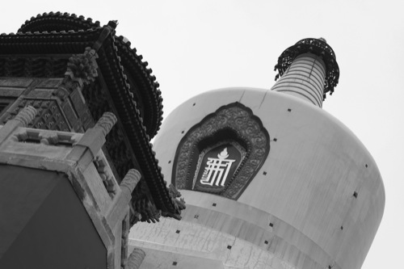
White Dagoba
白塔寺
Qiónghuá
北海公園
Forbidden City
紫禁城
Details
細節
Tourists
遊客
Strange
奇怪
Military Tree
樹
Policeman
警察
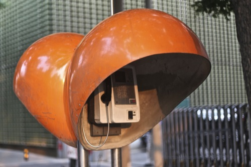
Phone
電話
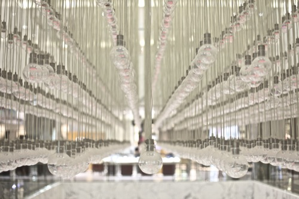
Light
光
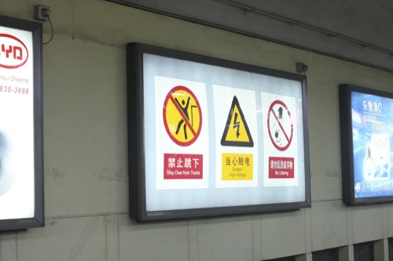
Subway
地鐵
Angry
憤怒
Baby
嬰兒
Dancing
跳舞
Temple of Heaven
天壇
Altar
祭壇
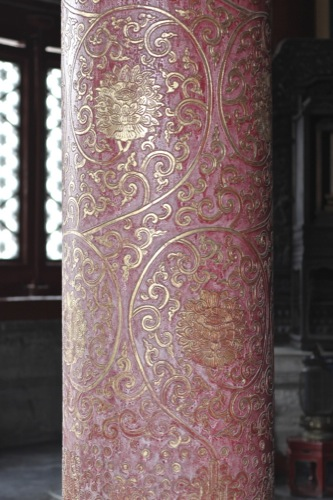
Pillar
支柱
 Roof
屋頂
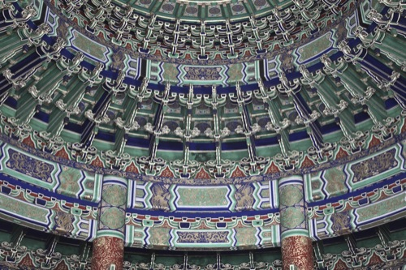
Inside
裡面
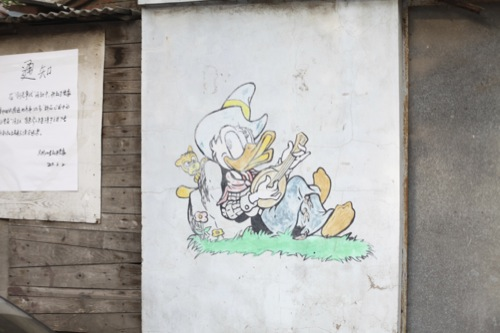
Donald Duck
唐老鴨
Bicycle
自行車
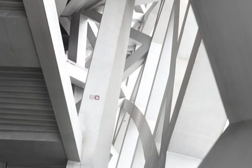
Olympic Stadion
奧林匹克體育場
Seats
席
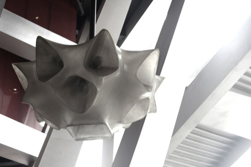
Lamp
燈
Swimming Pool
室內游泳池
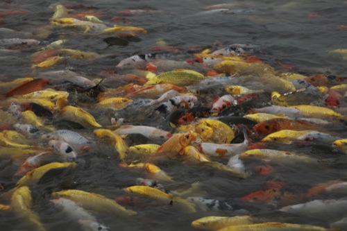
Fish
魚
Yihe Yuan
頤和園
Roof
屋頂
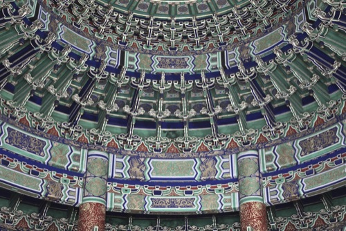
Inside
裡面
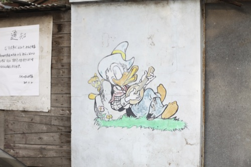
Donald Duck
唐老鴨
Bicycle
自行車
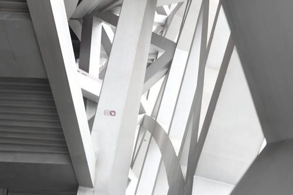
Olympic Stadion
奧林匹克體育場
Seats
席
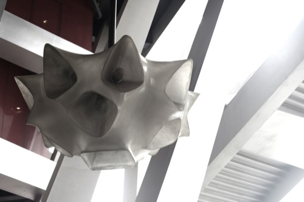
Lamp
燈
Swimming Pool
室內游泳池
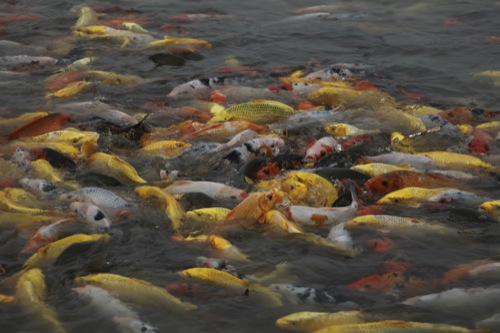
Fish
魚
Yihe Yuan
頤和園